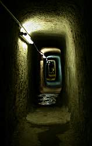
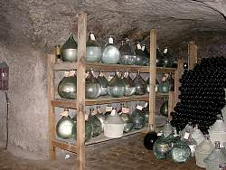

| In Deutsch |
| In Deutsch |
Nürnberger Felsengänge
Nuremberg Rock-cut Cellars
Useful Information
| Location: | In the hitoric centre of Nürnberg, below the castle. Entrance at the Albrecht-Dürer-Denkmal. Ticket office: Bergstr. 19, 90403 Nürnberg. |
| Open: |
All year daily 11, 13, 15 und 17. [2009] |
| Fee: |
Adults EUR 4.50, Children (10-18) EUR 3.50, Children (0-9) free, Students EUR 3.50, Seniors EUR 3.50. [2009] |
| Classification: |
 Cellar
World War II Bunker
Factory Cellar
World War II Bunker
Factory
|
| Light: | electric |
| Dimension: | |
| Guided tours: | D=60min, VR=24m |
| Photography: | |
| Accessibility: | |
| Bibliography: | |
| Address: |
Förderverein Nürnberger Felsengänge e.V., Bergstraße 19, D-90403 Nürnberg, Tel: +49-911-227066, Fax: +49-911-2305591.
NKG GmbH Nürnberger Kellerverwaltungsgesellschaft, Bergstraße 19, 90403 Nürnberg, Tel: +49-911-2449859, Fax: +49-911-23555365. E-mail: |
| As far as we know this information was accurate when it was published (see years in brackets), but may have changed since then. Please check rates and details directly with the companies in question if you need more recent info. |
|
History
| 1380 | first mentioned cellar in the Burgberg (castle mountain). |
Description
 |
| Image: Harrerkeller. |
The Nuremberg Castle is part of the medieval city, built on a mountain of red sandstone. This stone is rather soft and easy to shape with medieval tools, but has enough stability to build houses with. This was well known in the Middle Ages, so this rock was commonly used for buildings, the red stone giving Nuremberg a special flair. It was used until the start of the 20th century, so houses of all ages have this warm and nice colour.
The rock also allows to build arched cellars inside, and soon most houses had large cellars below. Other cellars were built horizontal into the mountainside, which had additional benefits:
- It was possible to use carts or wheelbarrows, as the cellars had no stairs.
- the digging of the cellar produced bricks and sand, which could be used for buildings.
- The size of the cellar did not depend on the size of the premises. It was possible to buy the right to built a celler from the neighbour, or to build multilevel cellars.
|  |
| Image: connection adit, built during World War II to allow the people in the air raid shelter, to leave them through other cellar if their entrance was blocked by collapsed buildings. |
A Nuremberg city law, which was an antecedent to the Deutsches Reinheitsgebot (German Pureness Law), ruled the beer brewing very soon. The beer had to be stored at six to eight degree Celsius for fermenting and mellowing. Beer was an important food in the Middle Ages, one reason was the lack of pure drinking water. Water from many springs was contaminated with all kinds of diseases, but beer was heated and thus sterilized. The big city of Nuremberg had between 30 and 40 breweries inside its walls, and all needed cellars to store their beer as required by the law. They built long tunnels, wide enough for casks at both sides and a corridor in the middle. Later, some cellars became railroad tracks in the middle corridor for transport carts.
|  |
| Image: Bierbrand (whiskey like schnapps, made of beer). |
In the high time of the cellars, during the 19th century, they were built in multiple levels. The Agneskeller, one of the visited cellars, once had four levels. The top level was destroyed in the mid 20th century by the construction of an underground parking. The levels were connected by narrow stairs for the people and big shafts for the beer casks.
The medieval cellars were built and used during centuries and they were made
larger several times.
In the very beginning they were used as wine cellars, later for beer.
Some adits collected water for the public fountains.
In World War II they were converted into air raid shelters and bunkers for
valuable art.
The latter usage is explained on the page of the
 Nuremberg Art Bunker
which is guided separately.
This tour concentrates on the older history of the cellars.
Nuremberg Art Bunker
which is guided separately.
This tour concentrates on the older history of the cellars.
The Triassic sandstones of the area are typically porous and water oozes through. This made the cellars very humid and caused problems for the stored goods. So the cellars had to be aired with a very easy system: air shafts at the south facade of buildings were warmed by the sun and the air inside ascended. The air in the cellars was replaced by fresh air from air shafts at the northern facade of the buildings. Only by the careful placement of air shafts, a weak but continuous ventilation of the cellars was achieved, which dried the cellars without warming them up.
A part of the cellars was used by a company making pickles until the mid 20th century. The cool temperatures were necessary for the storage of the food. But the bigger caverns were also used to fill the pickles into glasses for sale. In one passage the remains of a pickles barrel can be seen. The end of the pickles production was the time when industrial refrigerators became available and cheap enough.
Today the cellars are not used very much. Some years ago, a modern art project made an extraordinary exhibition in some of the chambers. And the small brewery at the exit of the cellars uses a small section to store beer and Bierbrand, a schnapps made of beer. The brewery produces Ökobier, unfiltered natural beer from naturally grown ingredients. It may be visited at the end of the tour. The beer is available at the pub next door.

|
| Gallery |
 Search Google for "Nürnberger Felsengänge"
Search Google for "Nürnberger Felsengänge" Google Earth Placemark
Google Earth Placemark Historische Felsengänge,
official website.
(
Historische Felsengänge,
official website.
( )
)
{kind=link}
{kind=link}
{kind=link}
{kind=link}
{kind=link}
{kind=link}
{kind=link}
{kind=link}
{kind=link}
{kind=link}
{kind=link}